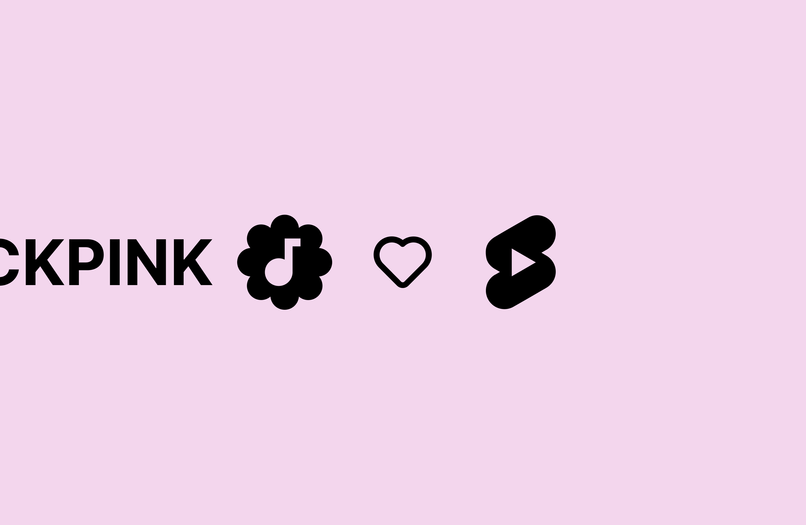

Music Artist Badges on Shorts
Extending verified badge of music artists on Shorts surfaces
Overview
As YouTube Shorts continues to grow as a major platform for music discovery, ensuring consistent artist identification becomes crucial. Official Artist Channels (OACs) provide verified status for artists across YouTube, but this verification wasn't initially present on key Shorts surfaces. This project aimed to bridge that gap by extending the familiar music note verified badge to the Shorts player and related pages.
The goal was to enhance user trust, improve artist discoverability within the Shorts ecosystem, and maintain consistent artist branding across the YouTube platform for viewers, artists, and creators.
Details
I integrated the existing OAC verification status into key Shorts UI components:
- Shorts Player Badge: Displaying the music note verified badge directly next to the artist's channel name on the Shorts player interface when watching a Short created by an OAC.
- Music Pivot Page Badge: Adding the verified badge next to the artist's channel handle in the header of the music pivot page (the page showing details about the sound used in a Short).
This required ensuring the verification status was correctly fetched and displayed based on the channel information associated with the Short or the sound.
Conclusion
Extending the OAC verified badge to Shorts surfaces provides a more consistent and trustworthy experience for viewers interacting with artist content. It reinforces artist identity within the Shorts ecosystem and aids music discovery by clearly highlighting official sources.
This project highlighted the importance of maintaining consistent platform-wide signals (like verification) across new and rapidly evolving features like Shorts to benefit all user groups – viewers, creators, and artists.
AI-Generated Content Disclaimer
Please note: The descriptive text (Overview, Details, Motivation, Conclusion) on this project page was generated with assistance from AI. While based on project details provided, the language and specific phrasing may not reflect official Google/YouTube internal documentation or views.
Connect with me!
👋👋👋
Open to any job and collaboration opportunities, or even a coffee chat! Feel free to connect with me with any of the options below.